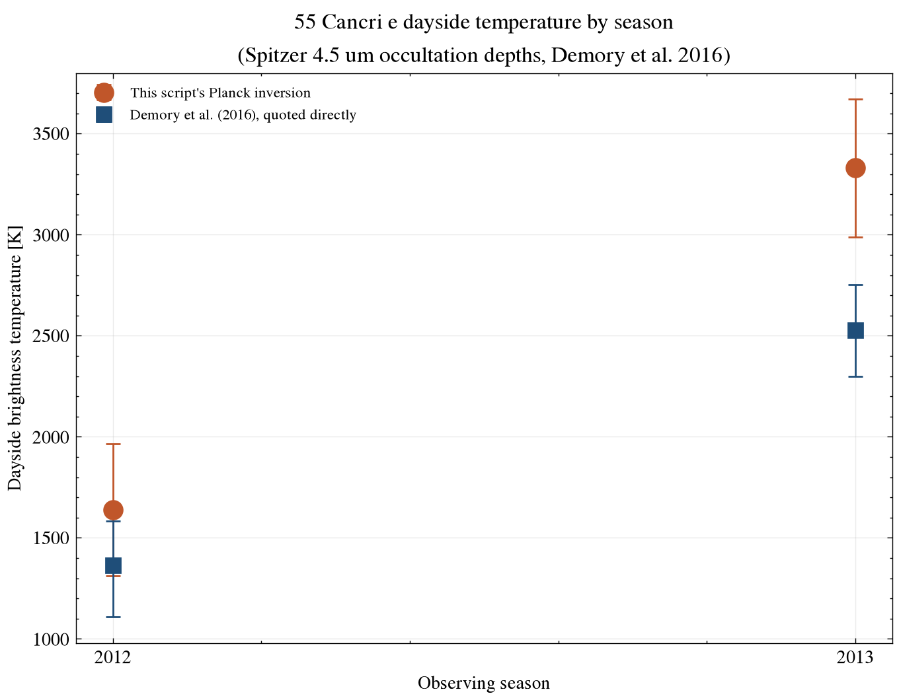
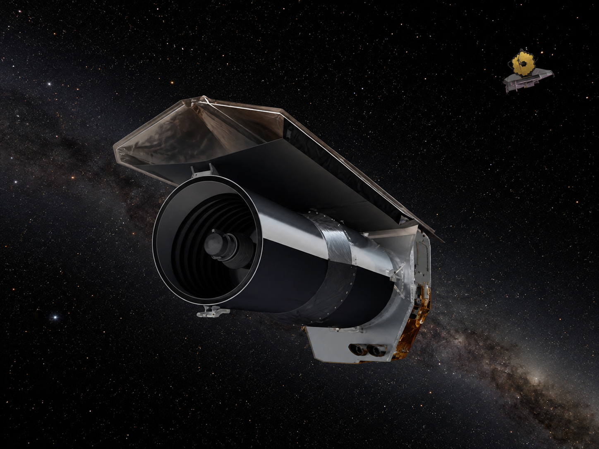

Exoplanet Atmosphere Report · Spitzer/IRAC 4.5 micron
A lava world on a 17-hour orbit, hot enough to keep its dayside surface molten. Spitzer occultation measurements split by observing season show a large shift in dayside brightness between 2012 and 2013 — the finding, later confirmed by JWST, that this planet's heat output is not constant.
AI-generated artist's concept of 55 Cancri e — not a real photograph. All data and figures in this report come from actual Spitzer/IRAC observations (see below).
Queried live from the NASA Exoplanet Archive TAP service (pscomppars).
| Radius | 1.875 Earth radii |
|---|---|
| Mass | 7.99 Earth masses |
| Bulk density | ~6.7 g/cm³ — consistent with a rocky, iron-rich super-Earth |
| Orbital period | 0.737 days (~17.7 hours) |
| Semi-major axis | 0.0154 AU — about 26 times closer to its star than Mercury is to the Sun |
| Equilibrium temperature | 1958 K |
| Host star | 55 Cancri A, G-type dwarf, Teff = 5172 K, 0.943 Rsun, 0.905 Msun |
| Distance | 12.6 parsecs (~41 light-years) |
| Discovery | 2004, radial velocity; transit detected in 2011 |
55 Cancri e's extreme proximity to its star, combined with its rocky (not gaseous) composition, means its dayside is thought to be a magma ocean, with surface temperatures well above rock's melting point. Unlike a gas giant's thick atmosphere, which buffers temperature swings, a thin or patchy volatile atmosphere above molten rock can plausibly change its heat output as the exposed lava surface itself evolves — condensing minerals, outgassing, or shifting cloud cover tied to surface temperature.
Demory et al. (2016) split eight Spitzer 4.5-micron secondary-eclipse observations by observing season and found the planet's dayside brightness had shifted measurably between 2012 and 2013 — a difference their own constant-depth model rejects at 3.7σ. JWST later observed continued dayside variability on shorter timescales (Patel et al., 2024; Hu et al., 2024).
AI-generated 3D-render-style concept of the dayside magma surface implied by the real temperature measurements above — not an actual image of the planet.
The figure inverts each season's occultation depth into a dayside brightness temperature via the Planck function, using the measured planet and star radii, and plots it against the temperature Demory et al. (2016) report directly from their own MCMC fit for the same season.

scripts/analyze_spectrum.py.Comparing the two season depths directly gives a 3.7σ difference — matching the significance Demory et al. (2016) report from fitting all eight individual eclipses (they reject a constant depth at that level). The brightness temperatures from this page's simple blackbody inversion (1639 K and 3330 K) run higher than the paper's own MCMC-derived values (1365 K and 2528 K) for a specific, documented reason: Demory et al. compute their temperatures using an observed infrared stellar spectrum of 55 Cancri A (Crossfield 2012) and their own fitted mean planet radius (1.92 Earth radii), while this page instead treats the star as a monochromatic blackbody at its catalog temperature and uses the archive's default planet radius (1.875 Earth radii) — a simpler stellar and radius treatment, not a missing reflected-light correction. The gap between seasons is real either way; the absolute temperatures depend on which method computed them.
System parameters come from the NASA Exoplanet Archive TAP service. The two occultation depths are the season-split values from Demory et al. (2016)'s Table 4, not a live archive query — see data/SOURCE.md for why, and scripts/analyze_spectrum.py for the Planck-inversion analysis (python scripts/analyze_spectrum.py to rerun it). A simple blackbody inversion at a single wavelength doesn't integrate over the instrument bandpass and uses a monochromatic stellar blackbody rather than the observed stellar spectrum and fitted planet radius the paper's own fit uses — that documented difference, not reflected light, is why this page's temperatures sit above the paper's own.

AI-generated illustration of the Spitzer Space Telescope, whose IRAC instrument took the real 4.5-micron occultation data used in this report. Not an official mission photograph — see NASA/JPL for real Spitzer imagery.